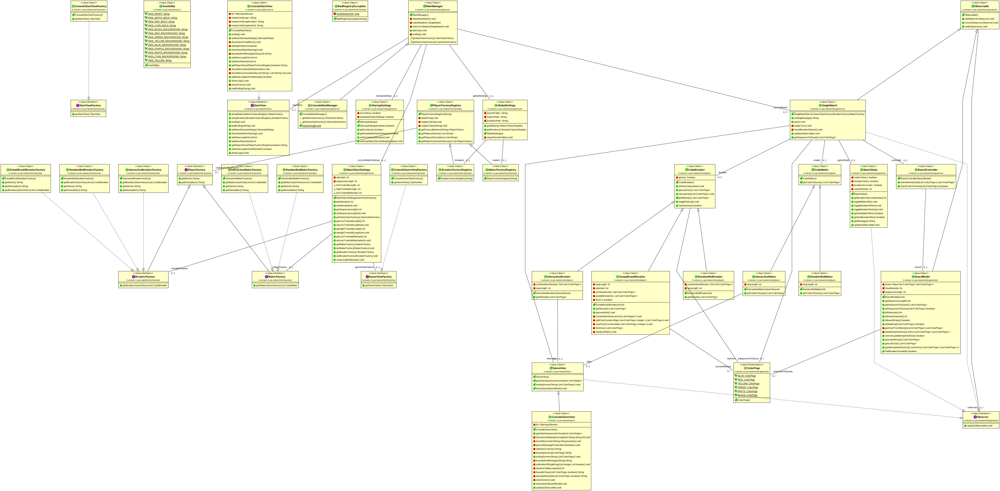

Documentazione del codice¶
Nella seguente pagina sarà possibile accedere alle informazioni che descrivono in maniera dettagliata ogni classe ed ogni package appartenente al parco software prodotto.
Per rendere più chiara la composizione della struttura del progetto, e quindi comprendere più dettagliatamente quello che è stato realizzato, abbiamo reso disponibile un diagramma UML il quale è possibile visualizzare qui di seguito.
